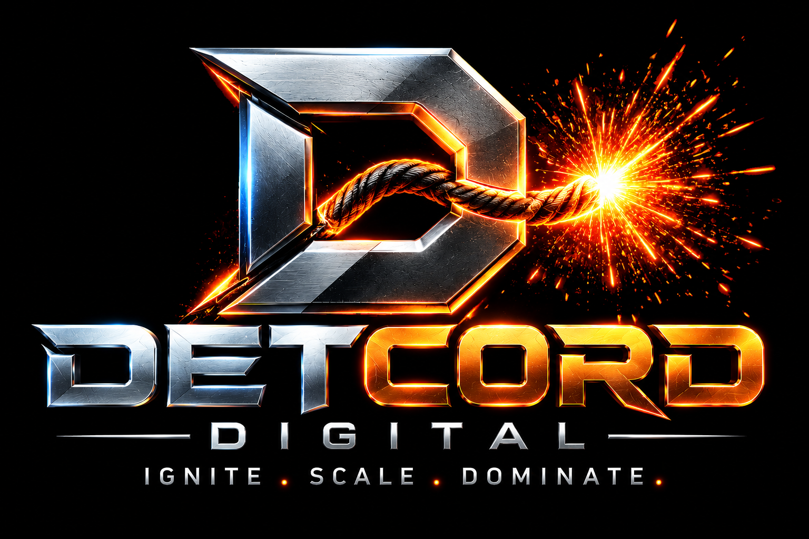

Get Found
SEO, local search, AI search visibility and Google Business Profile optimization.
Strategy, search, paid media, websites, custom software and automation—built around one objective: create more profitable growth for your business.

Detcord connects the pieces most agencies treat separately: visibility, demand, conversion, customer follow-up and revenue attribution.
SEO, local search, AI search visibility and Google Business Profile optimization.
Paid search, paid social, content, PR, email, SMS and retargeting.
High-performance websites, landing pages, CRO, funnels and mobile experiences.
Custom CRM systems and automation built around your actual sales process.
Reviews, local visibility, customer referral systems and retention.
Attribution, call tracking and reporting that shows which marketing creates customers.
Clicks matter only when they lead somewhere. We connect campaigns to leads, appointments, sales and revenue so you can see what's actually working.
Channel → campaign → keyword/ad → lead → opportunity → customer → revenue.
Technical SEO, on-page optimization, local SEO, keyword strategy and authoritative, people-first content.
Google Ads, Meta, Instagram, TikTok, LinkedIn, YouTube, retargeting and Local Services Ads.
Fast, responsive, conversion-focused websites and landing pages engineered for search visibility.
Purpose-built CRM systems designed around the way your company actually sells, serves and follows up.
Lead qualification, automated follow-up, scheduling, AI reception, workflow automation and customer service systems.
Strategy, content calendars, publishing, engagement and paid social campaigns.
Expert-led articles, case studies, guides, landing-page content and demand-generation assets.
Lifecycle campaigns, nurture sequences, segmentation, reactivation and customer retention.
Review generation, monitoring, response workflows and local reputation strategy.
Search strategy designed for modern discovery across traditional search and generative search experiences.
GA4, pixels, call tracking, attribution, dashboards and reporting that connects marketing to revenue.
Funnel analysis, A/B testing, forms, calls to action and landing-page optimization.
Customer and internal business apps designed, developed and integrated with your operating systems.
Media strategy, announcements, brand positioning and earned-media outreach.
Store optimization, paid shopping campaigns, lifecycle marketing and conversion strategy.
Secure hosting, SSL, backups, maintenance, updates, uptime monitoring and ongoing optimization.
Competitor search visibility, advertising, offers, positioning and market opportunity research.
Referral systems and campaigns that turn previous customers and dormant databases into new revenue.
Centralized digital strategy with location-level SEO, reputation, reporting and lead attribution.
Maps visibility, profile optimization, posts, photos, Q&A, citation consistency and local search management.
Find the highest-value opportunities and launch the right acquisition system.
Instrument calls, forms, leads, pipeline and revenue from day one.
Put more resources behind what produces profitable customers.
Compound visibility, reputation, retention and market share.
Tell us where you want the business to go. We'll map the digital system required to get there.
Strategy gets tested. Data gets dissected. Weak links get eliminated. What works gets amplified.
Meet The Digital GOAT →